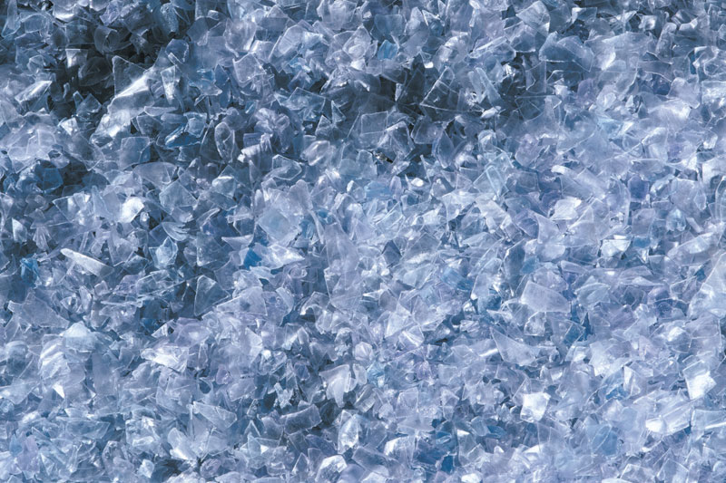

رقائق PET معاد تدويرها
يتم إنتاج رقائق PET المعاد تدويرها لدينا من مواد PET بعد الاستهلاك وبعد التصنيع، بعد فرزها ومعالجتها بعناية. وهي مخصصة للتطبيقات التقنية والصناعية، بما في ذلك الألياف النسيجية، والتغليف غير الغذائي، وأحزمة التغليف، والتشكيل بالحقن، وغيرها من عمليات التصنيع.
ملاحظة: هذه الرقائق ليست مناسبة للاستخدام الغذائي ولا يُقصد بها الاتصال المباشر بالأغذية.